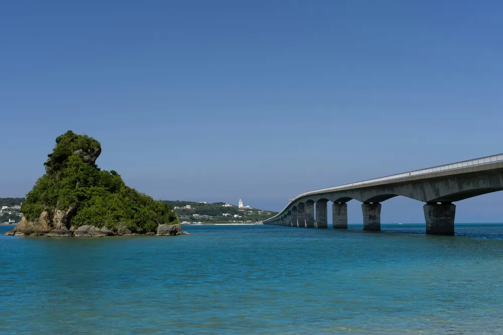
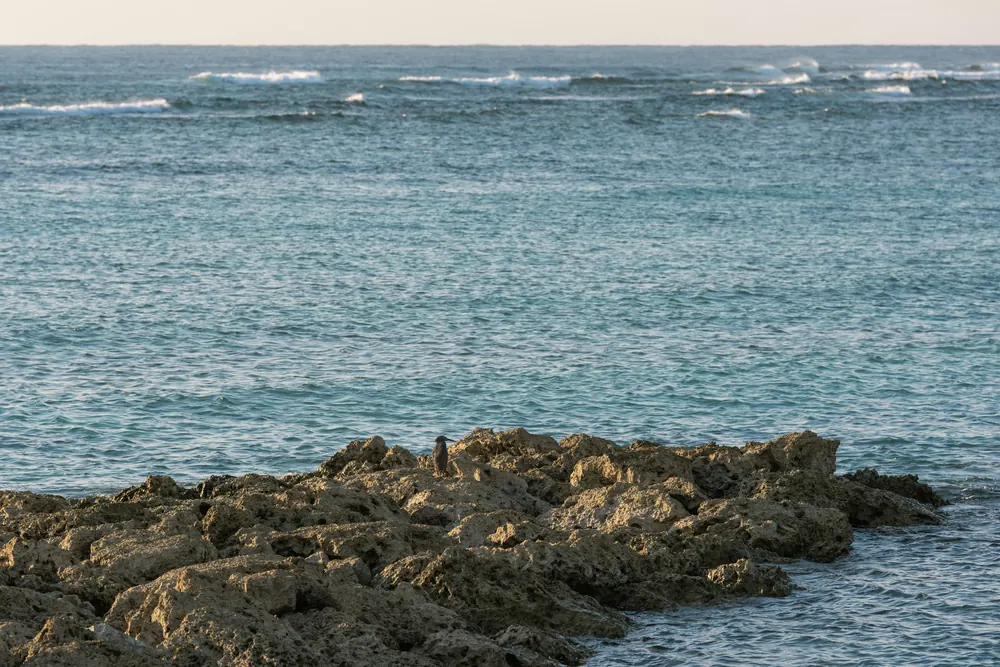

屋我地島周辺の海（名護市）（写真：Leopold / Unsplash（新しいタブで開きます））
Concept
海の恵みと、
お守りを。
店名「うみないび」
沖縄の古い言葉をもとにした造語です。沖縄の海は、昔から人々に豊かな「恵み」を与え、旅の安全を願う「お守り」でもありました。その海の力をアートの形にして、毎日の暮らしに飾れる「海の恵みとお守り」としてお届けしたい。そんな想いで名づけました。
その日、その時の海の色
名護の海は、時間や天気、潮の満ち引きで表情を大きく変えます。浅瀬の砂にさす光、沖の深い藍色、日が沈む前の金色。実際に海を見て、その色の重なりをレジンで表しています。作品に使う砂や貝殻などの素材にもこだわっています。
何層も重ねる手仕事
透明なエポキシレジンを、日数をかけて何層にも重ねてつくります。青、白波、きらめき、そして深み。層を重ねることで、底まで透き通るような奥行きが生まれます。打ち寄せる白波は一つずつ手で描くので、同じ波はふたつとありません。
古宇利島から見た古宇利大橋（写真：Leopold / Unsplash（新しいタブで開きます））
Works
レジンアートのイメージ
写真はフリー素材（Unsplash）のイメージで、当店の作品ではありません。お店の作品の写真は、準備ができしだい差し替えます。


写真：Maryna Yazbeck（海の波のアートパネル・新しいタブで開きます）、gretta vosper（木と海のレジンテーブル・新しいタブで開きます）、sooji min（貝とヒトデのレジン小物・新しいタブで開きます）、Adrian Swancar（木とレジンのプレート・新しいタブで開きます）、Hiros Lee（小さな水の世界・新しいタブで開きます）、Tolga deniz Aran（押し花のレジンペンダント・新しいタブで開きます）（Unsplash）
Workshop
自分の手で、
海をつくる。
はじめての方も、お子さまも。少人数の予約制で、色の混ぜ方から白波の描き方まで、ていねいにお伝えします。
- オーシャンコースター体験 60分・6歳以上 ¥3,500（税込） 翌日お引き取り（店頭）
- サンセットプレート体験 90分・10歳以上 ¥5,500（税込） 後日お渡し（郵送・店頭）
- マイジュエリー制作 75分・12歳以上 ¥4,500（税込） 当日お持ち帰り（UVレジン）
料金は材料費込み・税込です。サンセットプレートの郵送は送料が別にかかります。
体験教室のくわしい内容と予約の流れ
本部町の海（写真：Leopold / Unsplash（新しいタブで開きます））
Visit
お店のご案内
- 店名
- うみないび（Uminaibi）
- 所在地
- 〒905-1143
沖縄県名護市真喜屋763番地1
羽地の駅 2階 - 営業時間
- 10:00 - 18:00
体験教室は事前のご予約が必要です - 定休日
- 不定休（ホームページ・SNSでお知らせ）
- 電話番号
- 050-7116-0133
- 駐車場
- 羽地の駅の駐車場をご利用ください
お車で
沖縄自動車道の終点「許田IC」を降り、国道58号線を名護市街へ。市街地を抜けて、そのまま国道58号線を北（大宜味・国頭方面）へ進むと「羽地の駅」です。許田ICから約30分が目安です（道路の混み具合で変わります）。
バスで
那覇空港から高速バス（111番など）で「名護バスターミナル」へ。路線バス（67番 辺土名線など）に乗り換え、羽地の駅の近くのバス停（「真喜屋」など）で下車してください。時刻は各バス会社の案内でご確認ください。
羽地の駅は、名護市街から屋我地島・古宇利島や、やんばるへ向かう途中にあります。ドライブの前後に、レジンアートづくりはいかがですか。
Contact
世界にひとつの海を、
あなたの手に。
体験教室のご予約、オーダーメイドのご相談は、フォーム・LINE・Instagram からお気軽にどうぞ。